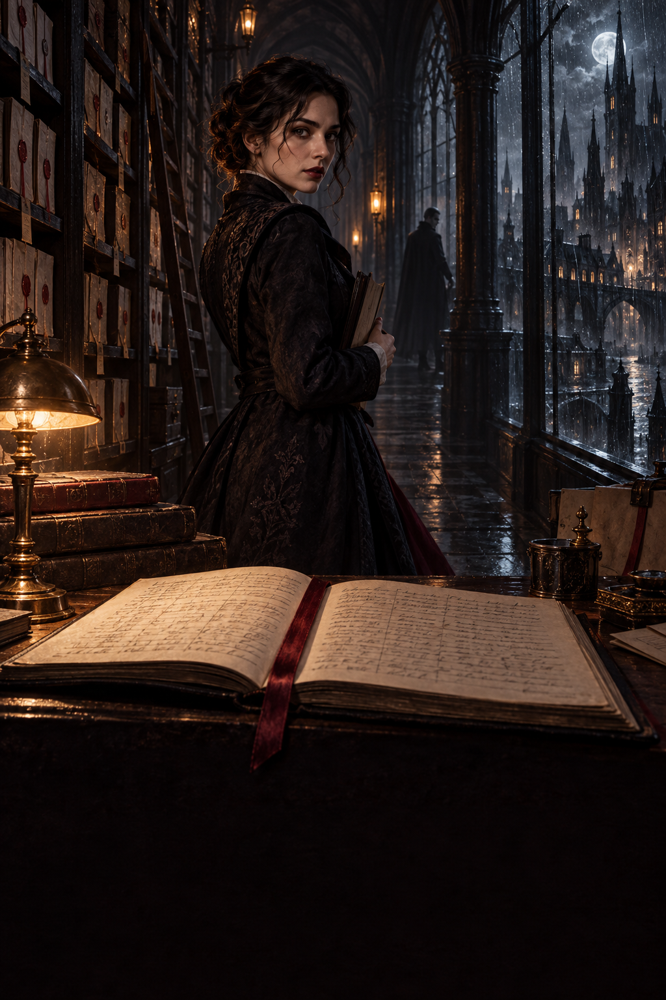

The Last Name on the Register
A night archivist finds names being used after death and one living woman marked for midnight. She has until dawn to expose the fraud.
Names for the Night
In the city of Bellwether, a vampire could drink only from a willing person whose name appeared on the night's register. The rule had ended a century of hunting. It had also made the archive the most dangerous building in town.
Iris Venn worked there after dark, checking signatures against consent cards and stamping permits in blue ink. She had never seen a donor attacked in the streets, which was the promise the system made. She had seen people sell a pint of blood for rent, then return before their bodies recovered, which was the cost no official poster mentioned. Her job was to keep the names honest. She had believed, until Tuesday, that she did.
Tuesday's first mistake was a woman named Miriam Bell. Miriam's card was renewed at six o'clock. At seven, the hospital sent notice that she had died the previous winter. Someone had used her signature again. Iris pulled the past month's registers. Miriam had donated six times since her death, each permit assigned to a different vampire and signed with the same careful loop on the final letter. The fraud was clumsy enough to have been noticed by anyone who looked, yet no one had.
The second mistake had her own handwriting on it. The renewal stamp belonged to her desk. She checked the clock and remembered leaving at five to take soup to her brother, Niko. At six, someone had entered the archive with her key or an exact copy. The watchman's log showed no visitor. Iris photographed the card and slipped it back before the chief registrar arrived.
A third name appeared in the stack: Leona Hart. Alive, thirty-two, consent withdrawn three months earlier. Her cancellation had been crossed out with blue ink and replaced by a permit for midnight. The assigned recipient was listed as V. Sable, the chief registrar's private account.
The rest of the story is omitted from this design preview.
Comments
Write a comment...